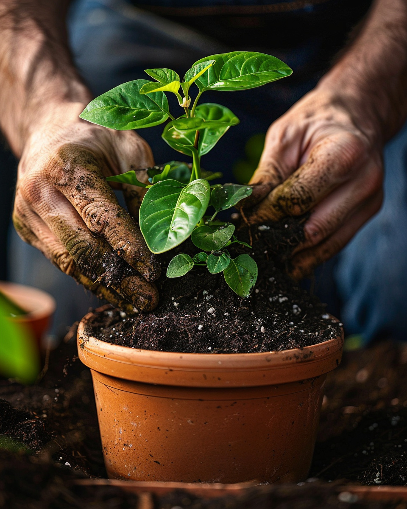

Plus qu'un magasin, un partenaire au quotidien
Livraison à domicile, financement, conseil personnalisé : on ne vous laisse pas repartir sans solution.


Conseil jardinage Guadeloupe : un accompagnement projet jardin
Chez Jardiland, le service ne s'arrête pas à la caisse. C'est un engagement de proximité, du diagnostic au suivi.
Penser projet, pas produit
Avant la facture, le besoin. Nos équipes prennent le temps d'écouter et de comprendre votre projet.
Adapter à votre quotidien
Étalement de paiement, livraison sur rendez-vous, mise en route : on ajuste à votre rythme.
Du suivi, pas que de la vente
Un projet de jardin se vit dans la durée. On reste joignables, on prend des nouvelles.
Nos services jardinerie Guadeloupe : vos questions
Livraison, financement, conseil : nos réponses aux questions les plus fréquentes.
Livrez-vous partout en Guadeloupe ?
Oui, nos services jardinerie Guadeloupe incluent la livraison à domicile pour les achats volumineux (terreau, mobilier de jardin, piscines, gros pots, sacs d'engrais). La zone et les délais sont précisés en magasin selon votre commune et la disponibilité.
Comment payer en plusieurs fois chez Jardiland ?
Pour les projets d'envergure, nous proposons le paiement en 4 fois sans frais et le financement jusqu'à 20 mensualités. Conditions à voir avec nos conseillers en caisse — pensez à apporter une pièce d'identité et un RIB pour accélérer la mise en place.
Le conseil personnalisé est-il payant ?
Non. Notre conseil jardinage Guadeloupe est gratuit en magasin. Nos 25 conseillers experts sont là pour vous aider sur le choix des plantes, l'alimentation animale, les outils, l'aménagement d'une terrasse… Apportez photos et dimensions, on construit ensemble la solution.
Faites-vous des devis pour un projet d'aménagement ?
Nous établissons des devis indicatifs pour les achats importants (mobilier complet, piscine en kit, gros lot de végétaux). Passez en magasin avec vos contraintes (surface, exposition, budget) : nos équipes vous accompagnent pour dimensionner le projet et choisir les bonnes références.
On vous accompagne du début à la fin
Pas besoin de tout savoir avant de venir. Le diagnostic se fait avec vous, en magasin.
Voir nos magasins